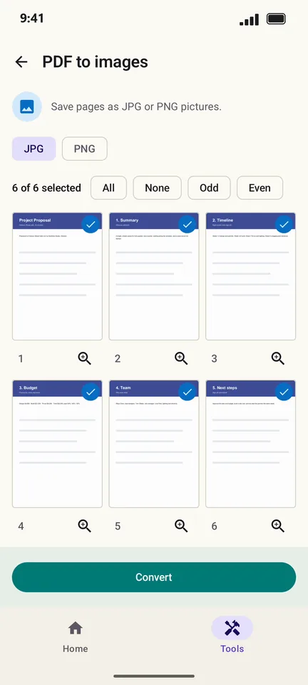

How to convert PDF pages to JPG or PNG on Android
Chats and social apps want pictures, not PDFs. PageCat saves every page you choose as a JPG or PNG image, ready to post or send.
Steps
Open the Tools tab, tap PDF to images and pick the PDF.
Pick JPG or PNG and the pages you want.

Tap Convert. Save the images to your phone or share them.

Good to know
- JPG files are smaller; PNG keeps text perfectly crisp.
- Need the text instead of pictures? Use PDF to text in the same Tools tab.
Questions
Can I convert just one page?
Yes. Tap None, then tap the page you want.